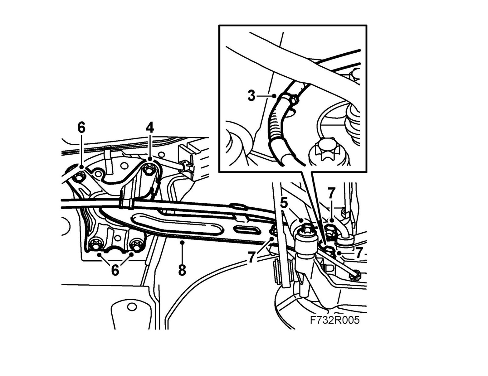
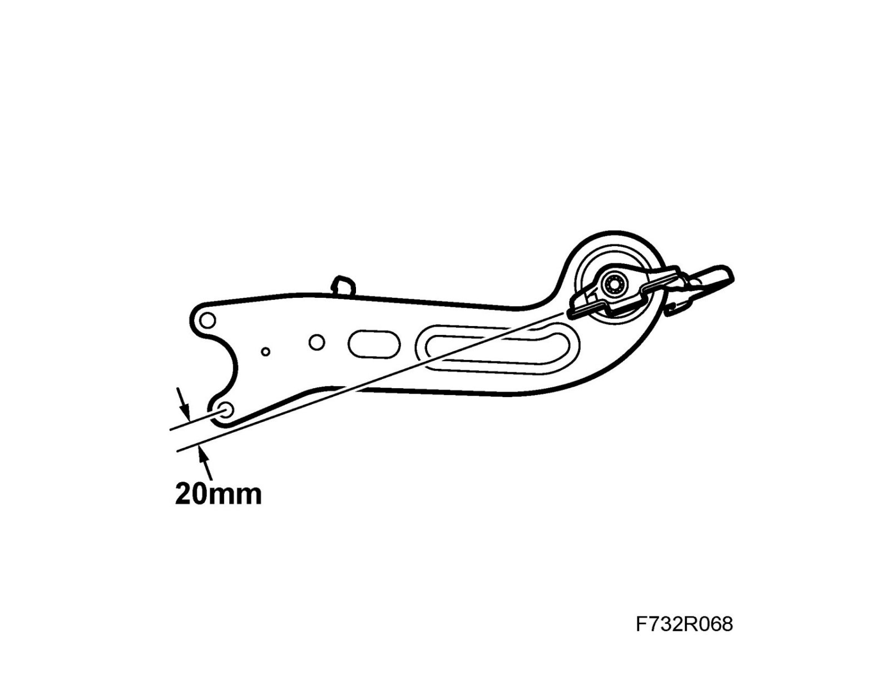

Longitudinal Link
Longitudinal linkTo remove
1. Raise the car.
2. Remove the wheel.
CV: Remove Chassis reinforcement, rear subframe, CV.
3. Remove the wiring harness for the wheel sensor from the longitudinal link.

4. Remove the parking brake cable from the holder on the longitudinal link.
5. Lift the lower link arm slightly with a jack to relieve the weight from the shock absorber.
Clean, lubricate and remove the shock absorber's lower bolt.
6. Remove the longitudinal link front attachment.
7. Remove the bolts which hold the longitudinal link to the steering swivel member.
8. Lower the longitudinal link.
9. Remove the bracket from the link.
To fit
1. Fit the bracket to the longitudinal link without tightening the bolt.
2. Grip the bracket tightly in a vice.
Fit the longitudinal link and tighten the bolt and nut so that turning the link is slow.
3. Align the link so that the center of the lower hole in the link rests approx. 20 mm above a hypothetical line from the bracket. Tighten the bolt and nut.
Tightening torque 75 Nm +90° (55 lbf ft +90°)

4. Lift the longitudinal link into place.
5. Fit the bolts to the steering swivel member.
6. Fit the longitudinal link front bracket to the holder for the parking brake cable.
Tightening torque 70 Nm +90° (52 lbf ft +90°)
7. Tighten the bolts which hold the longitudinal link to the steering swivel member.
Tightening torque 150 Nm (110 lbf ft)
8. Fit the shock absorber lower bracket. Remove the pillar jack.
Tightening torque 150 Nm (110 lbf ft)
Note
For correct fitting, see fitting Shock absorber.
9. Fit the parking brake cable in the holders.
Fit the wiring harness for the wheel sensor to the longitudinal link.
10. CV: Remove Chassis reinforcement, rear subframe, CV.
11. Fit the wheel.